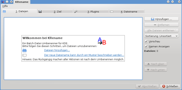

Krename
Dieser Artikel wurde für die folgenden Ubuntu-Versionen getestet:
Ubuntu 14.04 Trusty Tahr
Zum Verständnis dieses Artikels sind folgende Seiten hilfreich:
Will man z.B. Bilder von der Digitalkamera aussortieren und hat ganz unterschiedliche Dateinamen, dann möchte man ggf. die Dateien schnell und einfach umbenennen. Mit Hilfe des KDE-Programmes Krename  kann dies ganz einfach per Stapelverarbeitung erledigt werden.
kann dies ganz einfach per Stapelverarbeitung erledigt werden.
|  |
| Krename |
Installation¶
Es genügt das Paket
krename (universe)
 mit apturl
mit apturl
Paketliste zum Kopieren:
sudo apt-get install krename
sudo aptitude install krename
zu installieren [1]. Das Programm kann man anschließend in Kubuntu über "Dienstprogramme -> KRename" starten [2].
Anwendung¶
Das Programm ist für die Grundfunktionen selbsterklärend. Dateien können per Drag & Drop oder über die Schaltfläche "Hinzufügen" ausgewählt werden. Anschließend kann unter der Registerkarte "Ziel" verschiedene Option ausgewählt werden (z.B. "Dateien einfach umbenennen"). Im Reiter "Plugins" werden alle verfügbaren Erweiterungen inklusive der entspechenden Befehle aufgelistet. Unter Umständen müssen manche Erweiterungen über "Plugin aktivieren" manuell geladen werden.
In der Registerkarte "Dateiname" sind die Muster für die Umbenennung zu definieren. Hierzu werden zwei Modi angeboten, die sich an Anfänger und Fortgeschrittene richten. Über die Schaltfläche "Funktionen" bzw. "?" können die von den Plugins gebotenen Befehle eingefügt und so auch komplexe Muster erstellt werden.
Beipiel¶
Umbenennen von jpg-Dateien¶
In der Registerkarte "Ziel" ist die Option "Dateien einfach umbenennen" auszuwählen. Nun ist der entscheidende Eintrag zu Umbenennung einzusetzen, welcher leider nicht gerade selbst erklärend ist:
Unter Registerkarte "Dateiname" kann z.B. als Muster eingetragen werden:
[1-4{[exifExif.Image.DateTime]}][6-7{[exifExif.Image.DateTime]}][9-10{[exifExif.Image.DateTime]}]-EigenerName-##Erzeugt werden damit Namen mit Jahr-Monat-Tag-EigenerName-2stelligeNummer. Das führende Jahr ist von Vorteil, um im Dateimanager innerhalb eines Verzeichnisses die korrekte zeitliche Sortier-Reihenfolge auch über Jahre und Monate zu bekommen, wenn einfach nach Dateinamen sortiert wird.
EigenerName ist natürlich zu ersetzen mit dem, was die Datei spezifisch als Namen haben soll, wie z.B. mit Berlin:
[1-4{[exifExif.Image.DateTime]}][6-7{[exifExif.Image.DateTime]}][9-10{[exifExif.Image.DateTime]}]-Berlin-##Links¶
Dateien und Ordner umbenennen mit Métamorphose und Krename - Artikel aus EasyLinux 03/2007

Dateimanagement
 Programme zum Umbenennen (mit grafischer Oberfläche)
Programme zum Umbenennen (mit grafischer Oberfläche)
- Erstellt mit Inyoka
-
 2004 – 2017 ubuntuusers.de • Einige Rechte vorbehalten
2004 – 2017 ubuntuusers.de • Einige Rechte vorbehalten
Lizenz • Kontakt • Datenschutz • Impressum • Serverstatus -
Serverhousing gespendet von